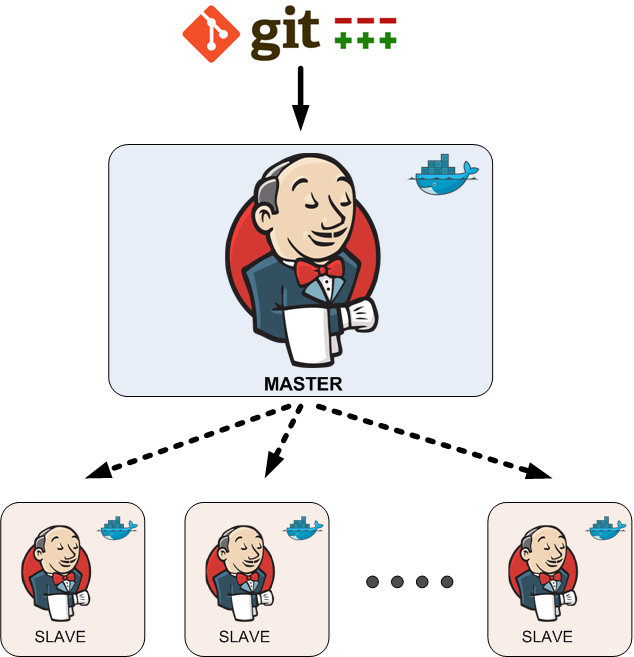
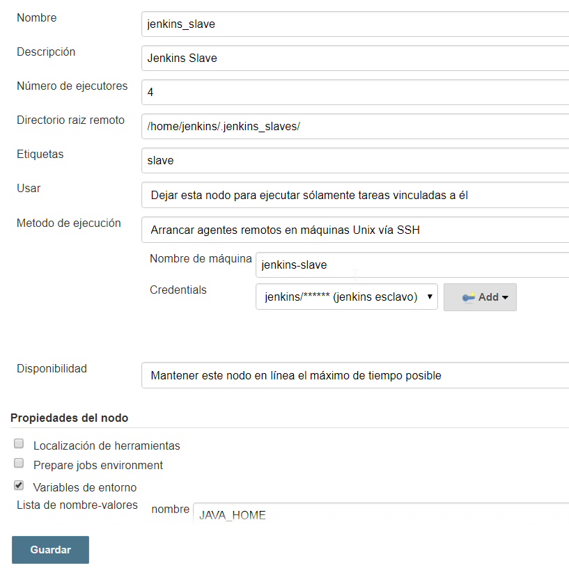
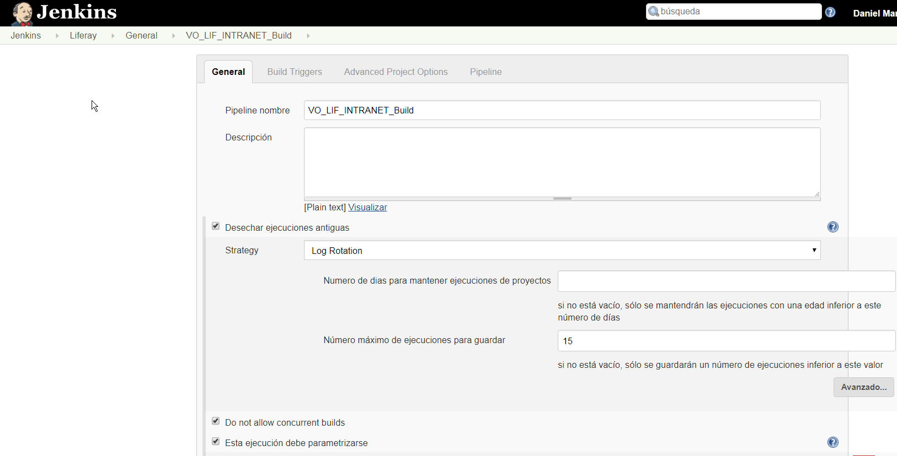
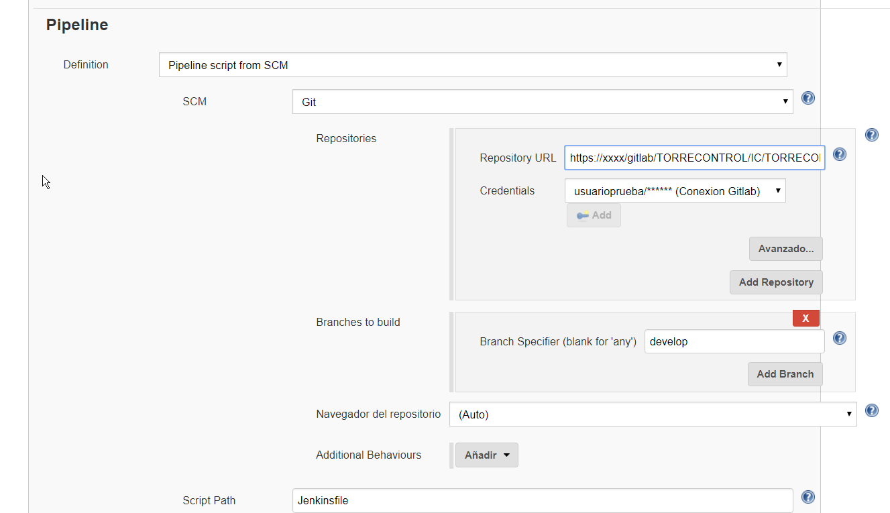
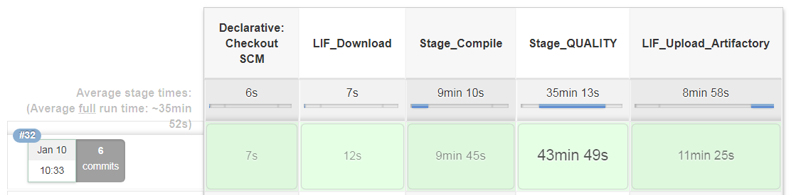
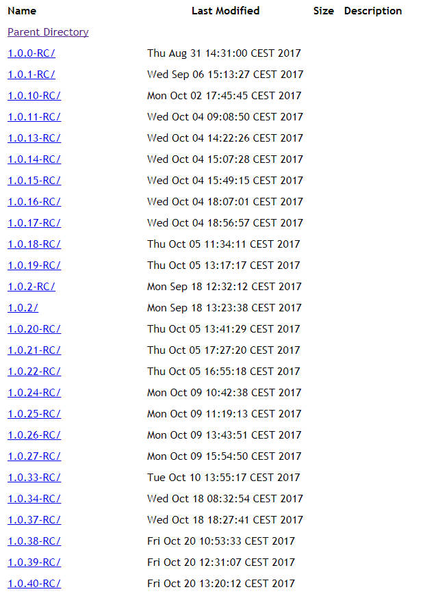
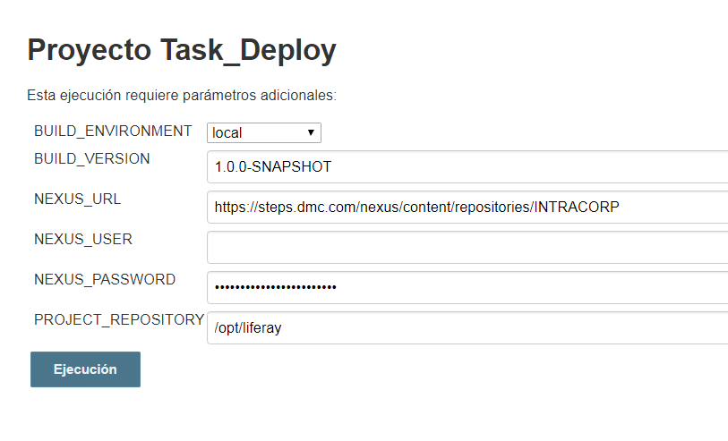

Jenkins Liferay Pipeline:
En los últimos meses tras asistir a algunos eventos y charlas sobre integración continua conocí la flexibilidad y los beneficios que puede aportar los pipelines como alternativa al uso de flow en jenkins y la implementación de groovy declarativos. En los proyectos en los que normalmente participo principalmente detecté que podríamos disminuir el tiempo de compilación y despliegue haciendo uso de algunas características de los pipelines como pueden ser la ejecución de los procesos en paralelo. A continuación voy a detallar el uso que hacemos de jenkins en liferay 7.
Contenedores:

https://hub.docker.com/_/jenkins/ docker run --name myjenkins -p 8080:8080 -p 50000:50000 -v /var/jenkins_home jenkins
- Jenkins-slave: Hemos partido de un centos7 como base y añadido algunas configuraciones para poder enlazar desde el contenedor jenkins-master. Dependiendo de cada proyecto que se utilice éste esclavo requerirá unas aplicaciones u otras, en nuestro caso generamos el dockerfile (Añadir el dockerfile y los recursos asociados).
Una vez que tengamos arrancados los dos contenedores podremos configurar nuestro jenkins y su esclavo:
- Añadir el nodo esclavo de jenkins:
Administrar Jenkins -> Administrar nodos -> Añadir nodo:

- Creación de job del tipo pipeline parametrizable: Vamos a crear dos jobs que se ejecutarán automáticamente, cada uno de ellos se ejecutará de manera automática cuando hagamos un push en la rama de develop y cuando realicemos un push de un nuevo tag con las versiones de Release candidate o release final. Para ambos la configuración es similar salvo el trigger que los llama y el jenkinsfile declarativo que se invoca. En nuestro vamos a realizar todos los steps en el jenkinsfile declarativo pero podríamos haber optado por otras estratégias como podría ser crear los jobs parametrizables independientemente para poder invocarlos individualmente o a todos desde un pipeline. Los jobs que utilizaremos para la segunda opción serían los siguientes:
- Task_Update_Repository: Actualizará el código del repositorio.
- Task_QA: Ejecución de análisis estático de código.
- Task_Sonar: Envío de código a analizar por sonar.
- Task_Junit: Ejecución de pruebas unitarias
- Task_Build_Layouts: Compilación con gulp de layouts
- Task_Build_Modules: Compilación con gradle de módulos
- Task_Build_Themes: Compilación gulp
- Task_Upload_Nexus: Subida a nexus
- Task_Deploy: Invocación de .sh para el despliegue al servidor liferay Continuando con la opción que vamos a utilizar de un jenkinsFile declarativo desde un repositorio de control de versiones que contenga todos los steps como conjunto debemos en añadir un job del tipo pipeline:

Los parametros de entrada que utilizaremos serán los siguientes:
- URL_GIT
- BRANCH
- NEXUS_SNAPSHOTS
Añadiendo la configuración para obtener el pipeline del repositorio:

- JENKINS FILE BUILD: Se subira a nexus una versión snapshot del artefacto VER
- JENKINS FILE RELEASE PREPARE: Se subira a nexus una versión -RC o final del artefacto VER
Las etapas por las que pasa el pipeline declarativo son las siguientes:
- LIF_Download: Descarga del código fuente
- Stage_Compile: Compilación con un proceso paralelo de módulos, layouts y theme.
- Stage_QUALITY: Validación de la calidad del código con sonar, pmd, checkstyle y pruebas unitarias.
- LIF_Upload_Artifactory: Subida de los artefactos a un repositorio(en nuestro caso nexus).

Una vez ejecutadas todas las etapas del pipeline tendremos todos los artefactos subidos al nexus para poder desplegarlos en los entornos dependiendo de la versión que indiquemos en un job que definiremos a continuación.

- Job de despliegue: Para los despliegues en nuestros entornos hemos creido conveniente que siempre se ejecute manualmente, aunque o bien podría planificarse o podría incluirse el despliegue en el propio jenkinsfile declarativo. Los parámetros de entrada del job serían los siguientes:
- BUILD_ENVIRONMENT: Entorno en el que desplegar local development integration preproduction production
- BUILD_VERSION: versión de los artefactos a desplegar
- NEXUS_URL: Repositorio de artefactos
- NEXUS_USER: Usuario de nexus
- NEXUS_PASSWORD: Password de nexus
- PROJECT_REPOSITORY: Ruta de liferay home El script que invocaremos será el siguiente:
/home/jenkins/scripts/deploy/deployInSlave.sh ${BUILD_ENVIRONMENT} ${BUILD_VERSION} ${NEXUS_URL} ${NEXUS_USER} ${NEXUS_PASSWORD} ${PROJECT_REPOSITORY}
El contenido del .sh se puede visualizar aquí
